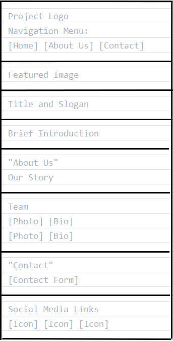
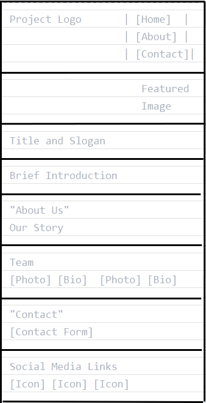

Name: Alecrim Children's Orphanage
Reason: Building a webpage for an orphanage that lacks an online presence can significantly enhance its visibility and awareness, attracting potential donors, volunteers, and partners by showcasing its mission and needs. It can facilitate online donations through secure payment systems, making financial contributions more accessible.
AlecrimChildren.orgThe purpose of this website is to provide the orphanage with an online presence, enhancing visibility and community engagement. The site will include a header with the logo and navigation menu, a Home Page with a featured image and introduction, an About Us section detailing the orphanage's story and team, and a Contact page with a form and social media links. This initiative aims to support the orphanage by creating a simple, informative platform for communication and outreach.
This document uses the following colors:
This document uses the following fonts:
Below are sketches for the home page layout:

